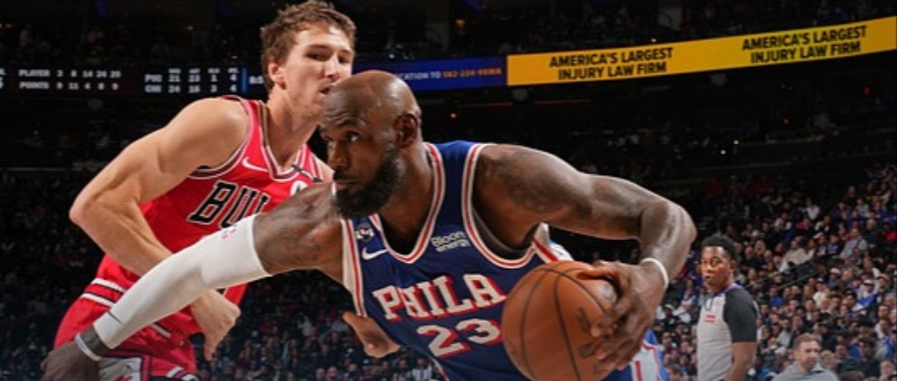
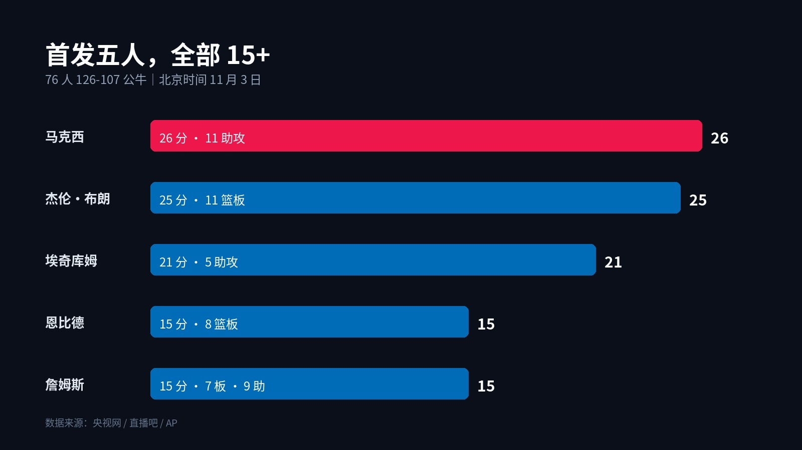

▲ 詹姆斯持球突破。图源：直播吧战报图（比赛现场画面）
NBA · 76 人四连胜
40 岁的詹姆斯，
在费城学会了"划水"
126-107 胜公牛，7 胜 1 负东部第一，首发五人全部 15+
北京时间 11 月 3 日，76 人在主场 126-107 轻取公牛，拿到本赛季第一次四连胜。
比分看着是 19 分大胜，过程其实不复杂：首节 30-23 起手，半场只领先 5 分，第三节一波 19-6 把差距拉开到两位数，末节再补一刀，比赛就结束了。
真正值得说的，是这支球队现在的样子。
詹姆斯 15 分 7 篮板 9 助攻，正负值 +30。恩比德 15 分 8 篮板，末节没上。马克西 26 分 11 助攻，其中末节 15 分。布朗 25 分 11 篮板，埃奇库姆 21 分。
首发五个人，全部 15+。这不是某个人爆了，是五个人都没闲着。
1
老詹改行了

▲ 76 人首发五人得分分布
这场球最舒服的地方，是詹姆斯几乎没怎么硬解。
半场 7 次助攻，其中两次是接近全场的击地长传，直接把球送到快下的埃奇库姆手里。第三节末段一个上篮把分差拉到 17 分，第四节 5 分 40 秒打成 2+1，领先 16 分，基本收工。
他不再是那个必须拿 30 分才能赢球的人。现在他的工作是发牌、控节奏、在关键回合站出来打一个。
15 分 9 助攻，+30，全场最高之一。
40 岁的人，终于打上了可以"划水"还能赢球的比赛。这话不是贬义，是这支球队成熟的标志。
2
收尾的人，是马克西
前三节，马克西其实打得不算亮眼。真正的爆发在第四节。
节开始一个突破上篮，之后连续冲击篮筐。6 分半钟那记三分，把比分改写成 107-96，比赛基本失去悬念。
单节 15 分，全场 26 分 11 助攻，还有 2 抢断 2 盖帽。
这就是现在 76 人的分工：前三节詹姆斯梳理，最后一节马克西接管。一个负责让所有人吃饱，一个负责在最后时刻把门关上。
3
大帝只打了三节，这才是重点
恩比德赛前因为脚伤被列为"出战成疑"，最后还是上了。
15 分 8 篮板 3 助攻，打了三节，第四节不需要他。
对 76 人来说，这比赢 19 分更重要。
这支球队的上限，从来不取决于詹姆斯还能拿多少分，也不取决于马克西能爆几场——取决于恩比德能不能在四月、五月还站在场上。常规赛让他三节打卡，是保护，也是必须。
4
先别急着喊"东部第一"
7 胜 1 负，东部第一，四连胜。成绩确实漂亮。
但这场球的对手，是 1 胜 6 负、五连败的公牛。
公牛不是没有亮点。今年的 4 号秀威尔逊拿了 24 分 7 篮板 4 助攻 4 抢断，鲍威尔 18 分，吉迪 13 分 10 助攻。年轻人能打，但整支球队现在缺人、缺默契，也缺赢球的习惯。
所以这场 19 分大胜，说明 76 人该赢的球赢得很稳，但还说明不了太多。
真正的检验在下一场：客场打活塞。再往后，才是东部的硬仗。
5
这支球队，终于像一支球队了
过去几年的 76 人，总给人一个感觉：纸面很强，打起来很累。
现在不一样了。五个人都能得分，球权分配清楚，老将不用硬撑，年轻人敢出手，替补席上还有人能顶。
比赛还剩 5 分钟，主力就可以坐着看。
能让 40 岁的人打上"养老球"，
才是一支强队真正成熟的样子。
评论区聊聊：
四连胜里，你觉得哪场赢得最硬？
这支 76 人，你给打几分？
点个关注。东部强队的每一场硬仗，这里都会跟。
资料来源：AP、央视网、直播吧。数据截至北京时间 11 月 3 日赛后。